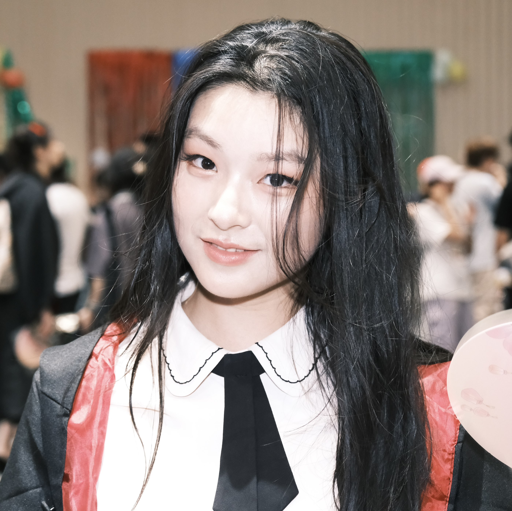

带你轻松探索
西浦校园的每一步
这是一个面向新生与外部访客的校园导览网页原型，结合路线推荐、互动打卡、任务收集与场景介绍，帮助用户在更短时间内了解校园空间、服务设施与特色地点。 设计方向参考课程 Brief 中 B3「XJTLU Campus Tour」，其目标用户为 new students 与 external visitors，设备以移动端为主，并鼓励结合 XR、location-based 与 tangible 体验。
项目概览
根据课程要求，系统必须是一个可通过 URL 访问的 Web App，并且应实现至少 3 个 must-have playful features，同时注重响应式设计与可用性。
目标用户
主要面向新生与校外访客，帮助他们快速建立对校园空间、常用设施和特色地点的初始认知。
系统目标
为用户提供路线导航、地点介绍、互动任务与沉浸式探索，让导览更有趣、更清晰，也更具参与感。
设计关键词
Mobile-first、Playful、Location-based、Simple onboarding、Accessible UI、Campus storytelling。
关于我们 · Team B3
本区块用于课程要求中的“成员介绍 + 两个 persona 展示”。请在下面四个卡片中替换为你们自己的照片、学号与个人简介内容。
Jiayi Chu 头像



Personas · 10-80-10
下面两个小卡片用于在 GitHub portfolio 中展示你们依据 10-80-10 规则构建的 personas。现在内容是空的占位提示， 请在正式提交前替换为具体文案和图片。

Persona A (New Student)
Alex Chen · Year 1 Undergraduate · Undecided Major
- Goals: Locate essential life-service spots (e.g., IT Service Desk, Student One-Stop Center) quickly and explore different academic buildings to help decide on a future major.
- Needs: Needs to know the specific functions of different buildings (e.g., Design Studios vs. Engineering Labs) and navigate the complex South/North campus layout effortlessly.
- Pain Points: The campus is massive. Existing 2D maps only show building names but don't explain what actually happens inside, making it hard to feel connected to a potential major.
- Scenario: During the first week of the semester, Alex walks around the campus using the mobile web app to find the IT center while simultaneously discovering what the nearby Science Building is used for.

Persona B (External Visitor)
Sarah Jenkins · High School Parent · Visiting with Family
- Goals: Discover XJTLU's iconic landmarks (e.g., the Central Building, Tunnel) and get a feel for the university's academic atmosphere for her child's future application.
- Special Needs: Requires a curated "Highlight Tour" route that minimizes walking distance. Needs easy-to-understand background info about the university's culture without reading long texts.
- Pain Points: Totally unfamiliar with the campus. Without a human tour guide, she misses the historical or cultural significance behind the impressive architecture and feels lost.
- Scenario: On a weekend Open Day, Sarah and her child use the web app's interactive map to take a self-guided tour around the most photogenic and representative campus spots.
推荐校园路线
下面的原型页面将校园导览拆成不同主题路线，适合新生第一次参观、家长来访或外部访客快速了解校园。
真实校园照片轮播
用于高保真展示：把你们拍摄的校园照片放进来，自动轮播 + 可点击缩略图切换。
Campus Map Preview
「校园示意图」点击楼栋代号查看详情；「实时定位地图」使用 Leaflet + OpenStreetMap，点「定位到我」开启 GPS 持续跟踪。示意图热点可微调各按钮的 left / top 百分比。

使用高德开放平台 Web 端 Key；请在控制台为该 Key 配置安全域名（白名单）。需 HTTPS 或 localhost 并允许定位。室内 GPS 可能偏差较大。
新生入门路线
30 mins快速了解教学楼、图书馆、学生中心与常见服务点，帮助新生完成第一天入校适应。
家长来访路线
40 mins突出校园环境、学习空间与学生支持资源，让家长更直观理解学生的学习与生活体验。
国际访客路线
35 mins以双语介绍校园特色、学术氛围与国际化场景，适合短时间参观与文化展示。
探索挑战路线
50 mins通过任务点、问答、集章和奖励机制，让校园导览更游戏化，增强参与度与记忆点。
核心功能设计
课程要求系统实现至少 3 个 must-have playful features。这里我为 B3 主题设计了 4 个很适合展示的功能，既满足 human-centric，也方便你们后面写 portfolio 和做 video demo。
智能路线推荐
用户可根据身份选择“新生 / 家长 / 外部访客 / 挑战玩家”，系统动态展示适合的导览路线与停靠点顺序。
位置打卡与数字集章
在关键地点完成定位打卡后，可获得专属数字印章，最后生成个人校园导览纪念卡，强化完成感和分享欲。
双语语音导览
为国际访客与新生提供中英双语地点介绍，减少“只知道走、不知道看什么”的无效导览体验。
互动任务与校园故事
每到一个地点解锁小任务，例如“找到服务台”“回答一题校园知识”“拍摄指定视角照片”，提升趣味性与记忆点。
用户体验亮点
这个版本强调移动端优先、信息层次清晰和任务驱动式探索，也方便你们在 poster 中解释为什么它更 playful、更 human-centric。
Mobile First
- 适合用户边走边看
- 按钮和卡片大，便于触摸
- 适合现场导览与快速浏览
降低认知负担
- 把复杂校园拆成清晰路线
- 每个地点只展示最关键的信息
- 让第一次来的人也不会迷失
强化参与感
- 任务机制带来即时反馈
- 集章奖励让过程更有目标
- 可生成分享式结果页面
可视化进度示例
这部分可以模拟用户完成导览后的成果展示，也很适合视频 demo 中做 ending scene。
已完成打卡点
解锁数字印章
完成互动任务
路线探索进度
Ready to Start Your Campus Adventure?
本网页是一个适合你们 B3 主题展示的高保真 HTML 原型版本。按照课程 brief，你们最终系统需要提供 live URL、响应式界面、核心功能实现，并在 portfolio 中说明设计过程、评估和迭代。
适合你们下一步继续加的内容
- 真实校园图片或插画
- 地点详情页弹窗
- 定位或地图 API
- 多语言切换按钮
- XR / AR 入口按钮